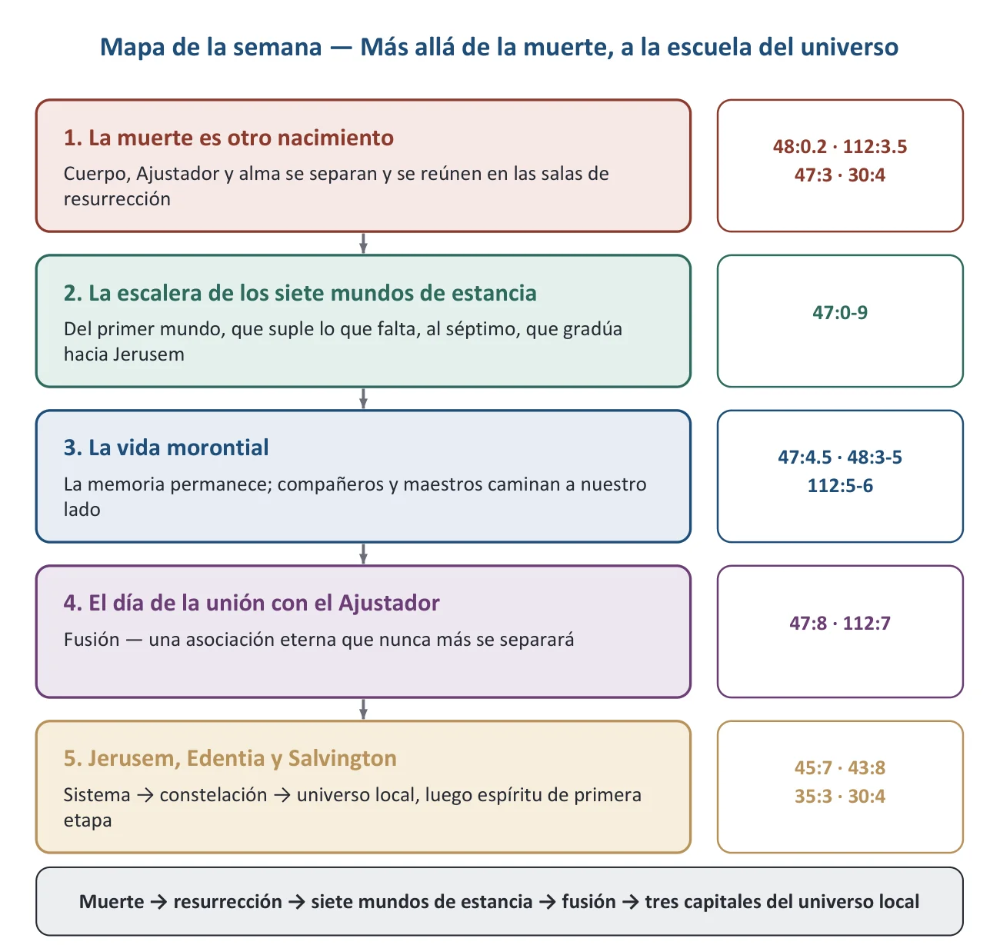
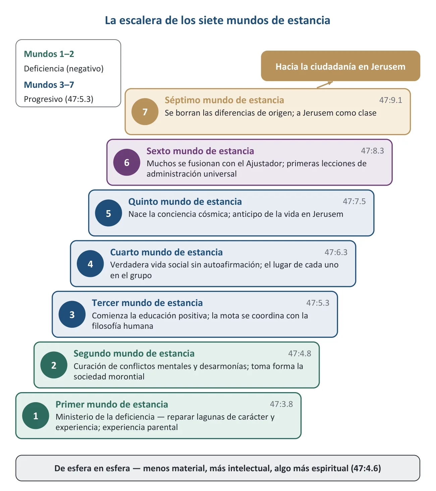
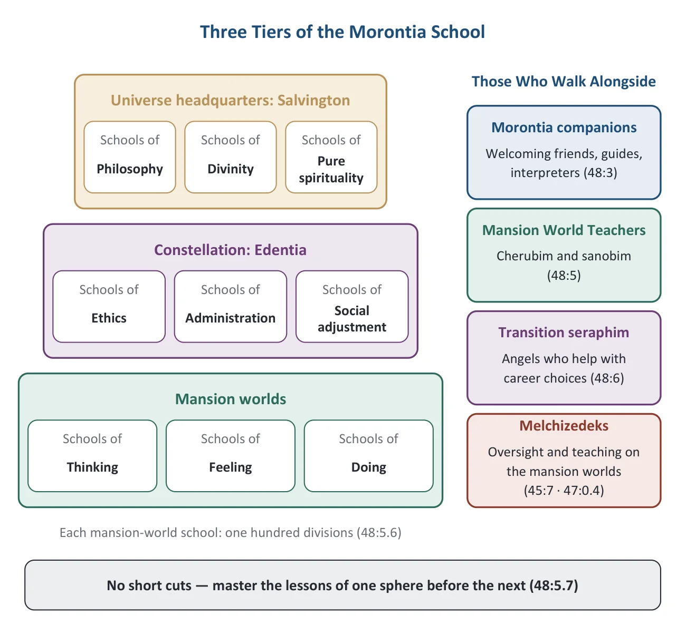

Más allá de la muerte, a la escuela del universo
Lectura: Documentos 47–48 · Documento 112:3–7 · Documento 30:4 · Documento 43:8 · Documento 45:7 · Documento 46:0 · Documento 35:3

El libro de Urantia presenta la muerte no como un final, sino como una puerta a la vida siguiente. Después de la muerte nadie se convierte de inmediato en un espíritu perfecto; la persona sube paso a paso por la etapa morontial, que se encuentra entre la materia y el espíritu. Los primeros peldaños, los siete mundos de estancia, son una escuela donde se suple y se corrige lo que quedó sin terminar en la tierra, y donde muchos se fusionan para siempre con el Ajustador residente. Esta semana seguimos el camino ascendente del universo local, desde la mañana de la resurrección hasta Jerusem, Edentia y Salvington.
Relato inicial
Las familias que velan junto a una cama suelen hacerse las mismas últimas preguntas. ¿Seguirá siendo esta persona la misma persona? ¿Volveremos a encontrarnos? ¿Qué sucede con una vida que se interrumpió antes de tiempo?
Durante mucho tiempo se han ofrecido dos clases de respuesta. Una dice que la muerte lo termina todo. La otra dice que en el momento de la muerte la persona pasa directamente a la recompensa o al castigo eternos. El libro de Urantia muestra un tercer camino. La muerte se parece más bien a un cambio de escuela. Despierto siendo yo mismo, retomo el aprendizaje donde lo dejé y puedo buscar a quienes partieron antes que yo. Esta semana recorremos esa nueva escuela, desde su puerta de entrada hasta el día de la graduación.
1. La muerte es otro nacimiento
No hay magia en la muerte
La enseñanza del libro sobre la vida después de la muerte comienza con una afirmación firme: la muerte no convierte a nadie en un ser acabado en un instante.
La vida morontial, tal como se extiende a través de varias etapas de la carrera en el universo local, es el único camino posible por el cual los mortales materiales pueden lograr el umbral del mundo de espíritu. ¿Cuál puede ser la magia que encierra la muerte, la disolución material del cuerpo humano, que pueda con un solo paso transformar instantáneamente la mente mortal y material en un espíritu inmortal y perfeccionado? Estas creencias no son sino supersticiones ignorantes y fábulas placenteras.48:0.2
«Morontia» designa el estado intermedio que se encuentra entre la materia y el espíritu. Nadie salta de la vida material a la vida espiritual de un solo brinco. Un largo puente salva la distancia, y ese puente es la carrera morontial. Tampoco aparece el puente de repente al morir. La vida morontial ya ha comenzado aquí en la tierra, en el momento en que llega el Ajustador y se concibe el alma (48:6.2).
Qué sucede en el momento de la muerte
Entonces, cuando se detiene la respiración, ¿qué va a dónde? El documento 112 explica que el cuerpo, el Ajustador y el alma toman cada uno un camino distinto.
Después de la muerte, el cuerpo material retorna al mundo elemental del cual se derivó, pero persisten dos factores no materiales de la personalidad sobreviviente: el Ajustador del Pensamiento preexistente, con la transcripción de la memoria de la carrera mortal, se dirige a Divinington; al mismo tiempo el alma morontial inmortal del humano fallecido permanece en la custodia del guardián del destino. Estas fases y formas del alma, estas fórmulas de identidad otrora cinéticas pero en este momento estáticas, son esenciales para la repersonalización en los mundos morontiales; y es la reunión del Ajustador con el alma la que vuelve a constituir la personalidad sobreviviente, la que te vuelve conciencia al tiempo del despertar morontial.112:3.5
El cuerpo vuelve al polvo, el Ajustador regresa por un tiempo a su hogar llevando el registro valioso de la vida, y el alma queda confiada a un ángel guardián. Cuando estos tres vuelven a encontrarse, eso es la resurrección. ¿Y qué experimenta el alma dormida? Nada en absoluto, responde el libro.
Este hijo de significado persistente y valor sobreviviente está totalmente inconsciente durante el período que corre desde la muerte hasta la repersonalización y está bajo la custodia del guardián seráfico de destino a lo largo de esta temporada de espera. No funcionarás como ser consciente, después de la muerte, hasta no haber logrado la nueva conciencia morontial en los mundos de estancia de Satania.112:5.13
| Factor | Adónde va después de la muerte | Qué hace |
|---|---|---|
| Cuerpo material | El mundo elemental, es decir, el polvo | No se vuelve a usar |
| Ajustador del Pensamiento | Divinington | Guarda el registro valioso de la mente |
| Alma | La custodia del guardián del destino | Conserva el modelo de la identidad, inconsciente |
| Personalidad | La singularidad otorgada por el Padre | Reaparece al reensamblarse |
| Conciencia | Suspendida por un tiempo | Vuelve al despertar en los mundos de estancia |
En seguida o al final de una época
No todos despiertan al mismo tiempo. Quienes han crecido lo suficiente para recibir un ángel guardián personal despiertan directamente en los mundos de estancia, en el «tercer período». Los demás despiertan en grupo cuando termina una época y un Hijo de Dios pasa lista; se los llama «sobrevivientes adormecidos» (30:4.11). ¿Es una larga espera una desventaja?
El paso del tiempo no es de importancia para los mortales adormecidos; están totalmente inconscientes y desapercibidos de la longitud de su reposo. Al reensamblarse la personalidad al fin de una época, aquellos que han dormido cinco mil años no reaccionan diferentemente de los que tan sólo han descansado cinco días.30:4.12
¿Y qué ocurre si un caso es dudoso? El documento 112 dice que el gobierno del universo siempre decide a favor de la persona.
Los gobiernos de Orvonton y Nebadon no afirman perfección absoluta para el funcionamiento minucioso del plan universal de la repersonalización mortal, pero sí declaran manifestar y efectivamente manifiestan paciencia, tolerancia, comprensión y compasión misericordiosa. Deberíamos más bien correr el riesgo de una rebelión en el sistema que cortejar el peligro de privar a un mortal que lucha, de cualquier mundo evolucionario, de la felicidad eterna de perseguir la carrera de ascensión.112:5.8
La mañana de la resurrección
El lugar del despertar son las salas de resurrección del primer mundo de estancia, un vasto templo para el ensamblaje de la personalidad.
el reensamblaje real y consciente de la personalidad auténtica y completa toma lugar en las salas de resurrección del mundo de estancia número uno. Durante toda la eternidad recordarás las profundas impresiones de haber presenciado por primera vez estas mañanas de resurrección.47:3.5
Quien despierta no es un extraño. La misma persona que vivió en la tierra abre ojos nuevos en un cuerpo nuevo.
En los mundos de estancia los sobrevivientes mortales resurgidos reanudan su vida exactamente desde donde la interrumpieron cuando los sobrecogió la muerte. Cuando vas de Urantia al primer mundo de estancia, observarás un cambio considerable, pero si hubieras provenido de una esfera del tiempo más normal y progresiva, difícilmente notarías la diferencia excepto por el hecho de que poseerías un cuerpo diferente; el tabernáculo de carne y hueso se ha dejado atrás en el mundo de natividad.47:3.1
La expresión «exactamente desde donde la interrumpieron» es importante. La muerte no hace a nadie más sabio, ni a nadie más santo.
En el mundo de estancia número uno (o en otro en caso de estado avanzado) reanudarás tu capacitación intelectual y desarrollo espiritual en el nivel exacto en el que se te interrumpiera debido a la muerte. Entre el momento de la muerte planetaria, o el traslado, y la resurrección en el mundo de estancia, el hombre mortal no gana absolutamente nada, aparte de experimentar el hecho de la supervivencia. Comienzas allí donde te interrumpes aquí.47:3.7
Esto puede sonar severo, pero en realidad es un consuelo. Todo el aprendizaje y todo el amor que reunimos hoy se convierten, sin cambio alguno, en el punto de partida de la vida siguiente.

Palabras nuevas
- Morontia: el estado intermedio que se encuentra entre la materia y el espíritu; después de la muerte la persona pasa por él y poco a poco se vuelve espíritu.
- Alma: el yo inmortal que la mente humana y el Ajustador residente hacen crecer juntos, y que sobrevive a la muerte.
- Guardián del destino: el ángel guardián asignado a una persona, que guarda el alma de esa persona después de la muerte.
- Divinington: uno de los mundos del Padre que rodean el Paraíso, hogar de los Ajustadores del Pensamiento.
Aclarar un malentendido
Un malentendido común: durante un tiempo las almas de los muertos vagan por la tierra y hablan con los vivos, o bien nacen de nuevo en otro cuerpo. Lo que dice El libro de Urantia: hasta la resurrección el alma reposa totalmente inconsciente bajo el cuidado de un ángel guardián. Quienes han pasado a los mundos de estancia no pueden enviar mensajes a sus seres queridos, y un Ajustador que ha partido nunca vuelve a la tierra (112:3.7). La resurrección no es un renacimiento en la tierra; es un despertar en los mundos de estancia.
2. La escalera de los siete mundos de estancia
Muchas moradas en la casa del Padre
El nombre «mundos de estancia» procede de un dicho de Jesús. El documento 47 explica el nombre en sus primeras líneas.
EL HIJO Creador, cuando estaba en Urantia, habló de las «muchas moradas en el universo del Padre». En cierto sentido, los cincuenta y seis mundos que rodean a Jerusem están dedicados a la cultura transicional de los mortales ascendentes, pero los siete satélites del mundo número uno se conocen más específicamente como mundos de estancia.47:0.1
Siete «mundos de transición» giran alrededor de Jerusem, la capital de nuestro sistema local, y a su vez siete satélites giran alrededor del primero de ellos. Esos satélites son los mundos de estancia.
Junto a la Biblia
En su última noche Jesús dijo: «En la casa de mi Padre muchas moradas hay» (Juan 14:2). El libro de Urantia lee este dicho como una referencia a los mundos de capacitación reales donde nos alojamos primero después de la muerte (30:4.17, 47:0.1). Las palabras de Pablo, «Siémbrase cuerpo animal, resucitará espiritual cuerpo» (1 Corintios 15:44), también pueden leerse junto a la mañana de la resurrección, cuando despertamos en una forma nueva.
Los diez primeros días
Lo primero que se da a quienes despiertan no es un examen ni un juicio, sino descanso y reencuentro.
Desde las salas de resurrección, procederás al sector Melquisedek, en el cual se te asigna residencia permanente. Luego se da comienzo a un período de diez días de libertad personal. Estás libre para explorar el vecindario inmediato de tu nuevo hogar y familiarizarte con el programa que te enfrenta. También tendrás tiempo de gratificar tu deseo de consultar el registro y de visitar a tus seres queridos y otros amigos terrestres que puedan haberte precedido a estos mundos. Al fin de tu período de diez días de tiempo libre comienzas el segundo paso en el viaje al Paraíso, porque los mundos de estancia son efectivamente esferas de capacitación, no meramente planetas de detención.47:3.6
Aquí está la respuesta del libro a la pregunta «¿Volveremos a encontrarnos?». Y cuando terminan los diez días de descanso, los mundos de estancia se convierten en una escuela.
El primer mundo: donde se suple lo que falta
Las lecciones del primer mundo de estancia son casi todas de recuperación.
Casi la entera experiencia del mundo de estancia número uno pertenece al ministerio de la deficiencia. Los sobrevivientes que llegan a esta primera esfera de estadía tienen tantos y tan variados defectos de carácter de la criatura y deficiencias de experiencia mortal que las actividades principales del reino consisten en la corrección y cura de estas múltiples herencias de la vida en la carne en los mundos evolucionarios materiales del tiempo y del espacio.47:3.8
Todos dejan este mundo con algunos espacios en blanco sin llenar. El primer mundo de estancia no regaña a nadie por ellos; los llena. La experiencia de ser padres es un ejemplo destacado. Quienes no tuvieron ocasión de criar hijos en la tierra adquieren esa experiencia en los hogares de los Hijos Materiales de Jerusem o en las guarderías probatorias (47:1.4-6). Tampoco se olvida a los niños que murieron demasiado pequeños.
Este despertar ocurre en el momento preciso de la llegada de cualquiera de los progenitores al primer mundo de estancia. Y entonces estos niños tienen toda oportunidad, como lo son, para elegir el camino celestial tal como lo hubieran hecho en los mundos en que la muerte tan prematuramente terminara su carrera.47:2.2
Un poco más espiritual en cada paso
Cada persona permanece el tiempo que haga falta, luego entra en el «sueño de traslado» y pasa al mundo siguiente, recibiendo cada vez un nuevo cuerpo morontial (47:3.10, 47:4.4). La dirección de la escalera es clara.
el mundo de estancia número uno es una esfera muy material, que presenta los comienzos iniciales del régimen morontial. Aún estás muy cerca de la condición humana y no muy lejos de los puntos de vista limitados de la vida mortal, pero cada mundo revela un progreso definido. De esfera en esfera te vuelves menos material, más intelectual, y ligeramente más espiritual. El progreso espiritual es mayor en los últimos tres de estos siete mundos progresivos.47:4.6
Fíjate en la palabra «ligeramente». Incluso en el cielo, el crecimiento no llega de golpe. En el segundo mundo se curan los conflictos de la mente (47:4.8), y solo en el tercero comienza la educación progresiva.
La capacitación de los primeros dos mundos de estancia es principalmente de naturaleza compensatoria de deficiencias —negativa— porque tiene que ver con la tarea de suplementar la experiencia de la vida en la carne. En este tercer mundo de estancia los sobrevivientes verdaderamente comienzan su cultura morontial progresiva.47:5.3
En el cuarto mundo los ascendentes aprenden por primera vez una verdadera vida social en la que nadie se pone a sí mismo por delante (47:6.3). Luego, en el quinto mundo, llega un gran punto de inflexión.
Un verdadero nacimiento de la conciencia cósmica toma lugar en el mundo de estancia número cinco; estás evolucionando un punto de vista universal. Éste es realmente un período de horizontes en expansión. … El estudio se está volviendo voluntario, el servicio altruista se torna natural, y la adoración, espontánea. Está naciendo un verdadero carácter morontial; una verdadera criatura morontial está evolucionando.47:7.5
Cuando lo que antes se hacía con esfuerzo empieza a fluir por sí solo, eso es señal de crecimiento. La fusión en el sexto mundo se trata en la sección 4. En el séptimo mundo se borran incluso las diferencias del planeta de origen.
La experiencia en esta esfera es el logro que corona la carrera postmortal inmediata. … Toda diferencia discernible entre los mortales que provienen de los mundos aislados y retardados y los sobrevivientes que provienen de esferas más avanzadas y esclarecidas se virtualmente oblitera durante la estadía en el séptimo mundo de estancia. Aquí se te purgará de todo resto de herencias desafortunadas, de un medio ambiente insalubre, y de tendencias planetarias no espirituales.47:9.1
Es la promesa de que haber nacido en Urantia, un mundo tocado por la rebelión, no será una carga eterna. Quienes terminan el séptimo mundo parten juntos hacia Jerusem como una clase (47:9.3).

3. La vida morontial: compañeros, maestros y memoria
¿Me recordaré a mí mismo?
La clave de la pregunta «¿Seguiré siendo yo?» es la memoria.
Tu memoria Ajustador permanece plenamente intacta a medida que asciendes en la vida morontial. Aquellas asociaciones mentales que eran puramente animalísticas y totalmente materiales perecieron con el cerebro físico, pero todo lo que en tu vida mental era valioso, y que tenía valor de supervivencia, fue duplicado por el Ajustador y está retenido como parte de la memoria personal durante todo el camino de la carrera ascendente. Tendrás conciencia de todas tus experiencias valiosas a medida que avanzas de un mundo de estancia a otro y de una sección del universo a otra —incluso hasta el Paraíso.47:4.5
Lo que tiene valor permanece; lo que no tiene sentido desaparece con el cerebro. Al principio la vida pasada puede parecer un sueño tenue, pero con el tiempo se vuelve más clara (112:5.21). Y los lazos entre las personas nunca se desechan.
Pero la personalidad y los enlaces entre personalidades no son jamás andamios; la memoria mortal de las relaciones con las personalidades tiene valor cósmico y persistirá. En los mundos de estancia conocerás y serás conocido, y más, recordarás y serás recordado por tus asociados de antaño en la corta pero estimulante vida en Urantia.112:5.22
Un cuerpo cuyo exterior corresponde a su interior
En los mundos de estancia la gente sigue comiendo, bebiendo y descansando (47:4.6). Nadie se convierte en un fantasma. Hay, sin embargo, una gran diferencia.
En la vida física, los mortales pueden ser hermosos por fuera aunque feos por dentro; en la vida morontial, y cada vez más en sus niveles más elevados, la forma de la personalidad variará directamente de acuerdo con la naturaleza de la persona interior.112:6.3
En los mundos morontiales la persona interior se muestra claramente en el exterior. El camino para llegar a ser hermoso allí comienza cuidando hoy el corazón.
Un amigo cordial: el compañero morontial
Nadie recorre solo el camino de los mundos de estancia. Hay un amigo allí desde el momento mismo del despertar.
Con certeza uno de ellos estará disponible para darte la bienvenida cuando te despiertes en el mundo de estancia inicial del primer sueño de tránsito del tiempo, cuando experimentes la resurrección de la muerte física a la vida morontial. Y desde el momento en que así se te dé la bienvenida al despertarte, hasta el día en que dejes el universo local en calidad de espíritu de primera etapa, estos compañeros morontiales por siempre estarán contigo.48:3.8
El compañero morontial es guía, intérprete y compañero de excursiones. El documento 48 añade una observación encantadora.
No son, técnicamente, esenciales para porción alguna de tu experiencia de supervivencia. Podrías alcanzar Salvington sin ellos, pero los echarías grandemente de menos. Constituyen el lujo de la personalidad en tu carrera ascendente en el universo local.48:3.18
El plan de Dios no contiene solo lo necesario, sino también la alegría. La vida ascendente se reparte casi por igual entre el trabajo y el juego (48:4.1), y la risa ocupa un lugar importante.
Una de las funciones del humorismo consiste en ayudarnos a todos a que nos tomemos menos en serio. El humorismo es el antídoto divino contra la exaltación del ego.48:4.15
Los Maestros de los Mundos de Estancia y las tres facultades
Los Maestros de los Mundos de Estancia son los querubines y sanobines que antes asistían a los ángeles guardianes aquí en la tierra. Como ya compartieron nuestra experiencia, nos comprenden bien (48:5.9). Sus escuelas están organizadas así.
En las escuelas de la vida morontial estos maestros enseñan a nivel individual, de grupo, de clase y de masa. En los mundos de estancia dichas escuelas están organizadas en tres grupos generales de cien divisiones cada uno: las facultades del pensamiento, las facultades del sentimiento, y las facultades de la acción. Cuando llegas a la constelación, se agregan las facultades de la ética, las facultades de la administración, y las facultades del ajuste social. En los mundos sede central del universo ingresarás a las facultades de filosofía, divinidad, y espiritualidad pura.48:5.6
Saber, sentir y vivir deben crecer juntos. Y en esta escuela no hay atajos.
Aquellas cosas que podrías haber aprendido en la tierra pero no aprendiste, deben ser adquiridas bajo el tutelaje de estos maestros fieles y pacientes. No existen caminos reales, atajos ni senderos fáciles al Paraíso. Sean cuales fueren las variaciones de cada itinerario, debes aprender las lecciones de una esfera antes de proceder a la siguiente48:5.7
Uno de los propósitos de la carrera morontial es efectuar la erradicación permanente de los vestigios animales en los sobrevivientes mortales, tales como la postergación, la ambigüedad, la falta de sinceridad, el evitar los problemas, la injusticia, y la búsqueda de lo fácil.48:5.8
La postergación encabeza la lista. Las tareas aplazadas en la tierra seguirán esperando allá. Uno de los dichos de la filosofía humana que se usan en el primer mundo de estancia para enseñar la «mota» resume exactamente la enseñanza de esta semana (48:7.1).
El destino de la eternidad está determinado de momento en momento por los logros del vivir de día en día. Las acciones de hoy son el destino de mañana.48:7.26

Palabras nuevas
- Compañeros morontiales: hijos del Espíritu Materno del universo local, amigos que dan la bienvenida a los ascendentes y los guían.
- Maestros de los Mundos de Estancia: querubines y sanobines glorificados, antes ayudantes de los ángeles guardianes, que ahora enseñan a los ascendentes.
- Mota: la sabiduría morontial, más elevada que la filosofía humana.
4. El día de la unión con el Ajustador
Una edad brillante
El Ajustador del Pensamiento que ha morado silenciosamente dentro de una persona llegará un día a ser uno con esa persona para siempre. Esto es la «fusión». La fusión suele producirse en los mundos de estancia o en Jerusem, aunque de vez en cuando sucede en la tierra sin pasar por la muerte, y a veces se retrasa hasta la capital del universo (112:7.3).
Ésta es una edad brillante para los mortales ascendentes y generalmente presencia la fusión perfecta de la mente humana con el Ajustador divino. En potencia, esta fusión puede haber ocurrido anteriormente, pero la identidad real y funcional muchas veces no se consigue hasta el tiempo de la estadía en el quinto mundo de estancia o aun en el sexto.47:8.3
El día de la fusión se celebra una breve ceremonia ante la mirada de los compañeros de la persona.
La unión de la mente inmortal evolutiva con el Ajustador eterno y divino está señalada por la convocación seráfica del superángel supervisor para los sobrevivientes resucitados y del arcángel de registro para los que van al juicio el tercer día, y luego, en presencia de los asociados morontiales de dicho sobreviviente, estos mensajeros de confirmación dicen: «Éste es un hijo amado en quien tengo complacencia». Esta sencilla ceremonia marca el ingreso de un mortal ascendente a la carrera eterna de servicio al Paraíso.47:8.4
Inmediatamente en cuanto se confirma la fusión con el Ajustador, el nuevo ser morontial se presenta a sus semejantes por primera vez con su nuevo nombre y se le otorgan cuarenta días de retiro espiritual de toda actividad rutinaria para que comulgue con sí mismo y elija una de las rutas optativas para dirigirse a Havona, y seleccionar entre las técnicas diferenciales del logro del Paraíso.47:8.5
La fusión no es un final, sino un nuevo comienzo.
Junto a la Biblia
Cuando Jesús fue bautizado en el Jordán, una voz del cielo dijo: «Este es mi Hijo amado, en el cual tengo contentamiento» (Mateo 3:17). El libro de Urantia nos dice que las mismas palabras se pronuncian sobre todo ascendente que se fusiona con el Ajustador (47:8.4). El «nombre nuevo escrito» en «una piedrecita blanca» de Apocalipsis 2:17 puede leerse asimismo junto al nombre nuevo que se recibe después de la fusión.
Para no separarse nunca más
Después de la fusión ya no hay ningún peligro de perder la vida eterna (112:7.4).
A través de esta magnífica ascensión, el Ajustador del Pensamiento es la garantía divina de la estabilización espiritual futura y plena del mortal ascendente. Mientras tanto, la presencia del libre albedrío mortal permite al Ajustador un canal eterno para liberar la naturaleza divina e infinita. Ahora, estas dos identidades se han vuelto una; ningún acontecimiento del tiempo o de la eternidad podrá jamás separar al hombre y al Ajustador112:7.10
El ser humano recibe del Ajustador la eternidad, y el Ajustador recibe del ser humano un canal de personalidad. Visto desde el lado de Dios, es el cumplimiento de una promesa.
Con la fusión Ajustadora, el Padre Universal ha cumplido su promesa del don de sí mismo a sus criaturas materiales; ha satisfecho la promesa, ha consumado el plan, del otorgamiento de divinidad sobre la humanidad. Ahora comienza el intento humano de realizar y actualizar las posibilidades ilimitadas que son inherentes a la sociedad excelsa con Dios que de este modo se ha tornado un hecho.112:7.14
Aun así, los fusionados siguen siendo algo materiales y un poco inferiores a los ángeles (47:8.6). La fusión garantiza la eternidad; no pone fin al crecimiento. La semana 10 examina más a fondo a los Ajustadores.
Aclarar un malentendido
Un malentendido común: llegar a ser uno con Dios significa que el yo individual desaparece, como una gota de agua que se disuelve en el mar. Lo que dice El libro de Urantia: el ser fusionado es una sola personalidad que no puede descomponerse en partes (112:7.8), pero en todo lo que concierne a la personalidad es el ser humano quien lleva la iniciativa, porque fue el humano quien primero poseyó personalidad (112:7.12). Al fusionado se le sigue llamando «mortal ascendente» hasta el final. El yo no se borra; sigo siendo yo para siempre.
5. Jerusem, Edentia y Salvington
Jerusem: la capital del sistema
Quienes terminan el séptimo mundo de estancia son despedidos por sus compañeros reunidos en el mar de cristal y parten para hacerse ciudadanos de Jerusem, la capital del sistema (47:9.4).
El orden y la buena voluntad están siendo restablecidos, y las condiciones en Jerusem se van acercando cada vez más al estado celestial de vuestras tradiciones, porque la sede central del sistema es verdaderamente el cielo visualizado por la mayoría de los creyentes religiosos del siglo veinte.46:0.1
Lo que comúnmente se llama «cielo» resulta ser la primera estación importante de un largo viaje. Allí los ascendentes aprenden a gobernar juntos.
Los Hijos Melquisedek dirigen más de treinta centros distintos de instrucción en Jerusem. Estas facultades de capacitación comienzan con la facultad de autoevaluación y terminan con las escuelas de ciudadanía en Jerusem, en las que los Hijos e Hijas Materiales se unen con los Melquisedek y otros en este esfuerzo supremo por calificar a los sobrevivientes mortales para que asuman las elevadas responsabilidades del gobierno representativo. El entero universo está organizado y administrado sobre la base representativa. El gobierno representativo es el ideal divino del autogobierno entre los seres no perfectos.45:7.3
Edentia: donde aprendemos a convivir
Después de Jerusem viene Edentia, la sede de la constelación, rodeada por setenta mundos de capacitación.
El tiempo transcurrido en los setenta mundos de capacitación transicional de la cultura morontial, asociado con el tiempo de Edentia de ascensión mortal, es el período más tranquilo en la carrera de un mortal ascendente hasta el estado de finalista; ésta es en realidad la típica vida morontial. A pesar de que se te vuelve a reacondicionar cada vez que pasas de un mundo cultural importante a otro, sigues reteniendo el mismo cuerpo morontial, y no hay períodos de inconciencia de la personalidad. Tu estadía en Edentia y sus esferas asociadas será dedicada principalmente a dominar la ética de grupo, el secreto de una interrelación agradable y beneficiosa entre las distintas órdenes universales y superuniversales de personalidades inteligentes.43:8.2-3
Aprender a vivir con seres distintos de uno mismo, sin irritación, es el programa de estudios de Edentia (43:8.9). De sus jardines el autor confiesa lo siguiente.
Si disfrutas de las flores, arbustos, y árboles de Urantia, será para tus ojos un verdadero festín contemplar la belleza botánica y la grandeza floral de los jardines excelsos de Edentia. Pero está más allá de mi poder de descripción emprender la tarea de transmitir a la mente mortal un concepto adecuado de estas bellezas de los mundos celestiales.43:6.8
Salvington: la universidad del universo
Tras graduarse en la constelación, los ascendentes llegan a Salvington, la capital del universo local. Los 490 mundos que la rodean se llaman la Universidad Melquisedek.
Estas esferas maravillosas —setenta primarias y 420 tributarias— son frecuentemente referidas como la Universidad Melquisedek. Los mortales ascendentes de todas las constelaciones de Nebadon pasan cursos de capacitación en todos los 490 mundos para adquirir condición de residentes en Salvington.35:3.1
De la primera estación allí, el mundo Melquisedek, el documento 35 dice lo siguiente.
Para un ascendiente este mundo es, probablemente, el lugar más interesante de todo Nebadon. … Jamás olvidarás tus reacciones en el primer día de vida en este mundo único, ni siquiera cuando hayas alcanzado tu destino en el Paraíso.35:3.11
Cuando se completan los estudios de Salvington, se ha cruzado el largo puente morontial, y el ascendente se convierte en espíritu.
Los mortales adquieren auténtica identidad espiritual justo antes de abandonar la sede del universo local para los mundos de recepción de los sectores menores del superuniverso. El pasaje de la etapa morontial final a la primera o más baja condición espiritual no es sino una ligera transición. La mente, la personalidad y el carácter son inalterados por dicho avance; tan sólo la forma sufre modificaciones.30:4.20
A lo largo de este camino el cuerpo morontial cambia 570 veces en total.
Desde el momento en que abandonas los mundos materiales hasta que se te constituye como espíritu de primera etapa en Salvington, sufrirás tan sólo 570 cambios morontiales separados y ascendentes. Ocho de estos ocurren en el sistema, setenta y uno en la constelación, y 491 durante la estadía en las esferas de Salvington.48:1.5
| Estación | Qué clase de lugar | Lecciones principales | Cambios morontiales |
|---|---|---|---|
| Jerusem y los mundos de estancia | Capital del sistema de Satania | Suplir deficiencias, unificar la personalidad, gobierno representativo y ciudadanía | 8 |
| Edentia | Sede de la constelación de Norlatiadek, 70 mundos de capacitación | Ética de grupo, convivencia con otros seres | 71 |
| Salvington | Capital del universo local de Nebadon, 490 mundos de la Universidad Melquisedek | Filosofía, divinidad, espiritualidad pura, administración del universo | 491 |
¿Por qué una escuela tan larga?
¿Por qué Dios no hace perfectas a las personas de una vez y las lleva directamente al Paraíso?
El plan de supervivencia mortal tiene un objetivo práctico y útil; no sois los receptores de toda esta labor divina y capacitación cuidadosa tan sólo para que podáis sobrevivir y disfrutar de la beatitud sin fin y de la facilidad eterna. Existe un objetivo de servicio trascendental que se oculta más allá del horizonte de la presente edad del universo.48:8.3
El universo no es un lugar de vacaciones, sino una escuela, y al final de la escuela está el servicio. Dios está formando colaboradores que trabajarán a su lado. Un solo día en la tierra es el primer grado de esa escuela.

Palabras nuevas
- Jerusem: capital del sistema local de Satania, donde se hacen ciudadanos los ascendentes que terminan los mundos de estancia.
- Edentia: sede de la constelación de Norlatiadek, donde en setenta mundos de capacitación los ascendentes aprenden a convivir.
- Salvington: capital del universo local de Nebadon, donde los ascendentes pasan por la Universidad Melquisedek y se convierten en espíritus de primera etapa.
Puntos clave de la semana
- La muerte no convierte a nadie en un espíritu perfecto en un instante. Entre la materia y el espíritu se extiende la carrera morontial.
- Después de la muerte el cuerpo vuelve al polvo, el Ajustador va a Divinington y el alma queda bajo la custodia del guardián del destino. La resurrección es el reencuentro de estos tres en las salas de resurrección de los mundos de estancia.
- La persona vuelve a empezar exactamente donde la dejó la muerte, y puede buscar y encontrar a los seres queridos que partieron antes.
- Los siete mundos de estancia son una escuela, desde el primer mundo, donde se suplen las deficiencias, hasta el séptimo, donde los ascendentes se preparan para la ciudadanía en Jerusem, y en cada paso se vuelven ligeramente más espirituales.
- Los recuerdos valiosos y los lazos entre las personas no desaparecen. Los compañeros morontiales y los Maestros de los Mundos de Estancia recorren el camino con nosotros.
- Muchos se fusionan con sus Ajustadores en el quinto o el sexto mundo de estancia, y a partir de entonces la carrera eterna ya no corre peligro.
- Pasando por Jerusem, Edentia y Salvington la persona se convierte en espíritu de primera etapa, y la meta de esta larga escuela no es un descanso sin fin, sino un servicio trascendental.
Preguntas para reflexionar
- «Comienzas allí donde te interrumpes aquí» (47:3.7). ¿Qué dice esto sobre las cosas que hoy estás aplazando?
- Las primeras escuelas de los mundos de estancia son las facultades del pensamiento, del sentimiento y de la acción. ¿Qué luz arroja esto sobre el equilibrio en tu vida de fe?
- ¿Cómo podría cambiar tu manera de ver la muerte y la vida la idea de que Dios no te está preparando para unas vacaciones eternas, sino para el servicio?
Lectura para la próxima semana
- Documentos 49–55 — Los mundos habitados, las edades por las que pasa un planeta, la rebelión de Lucifer y el destino de luz y vida